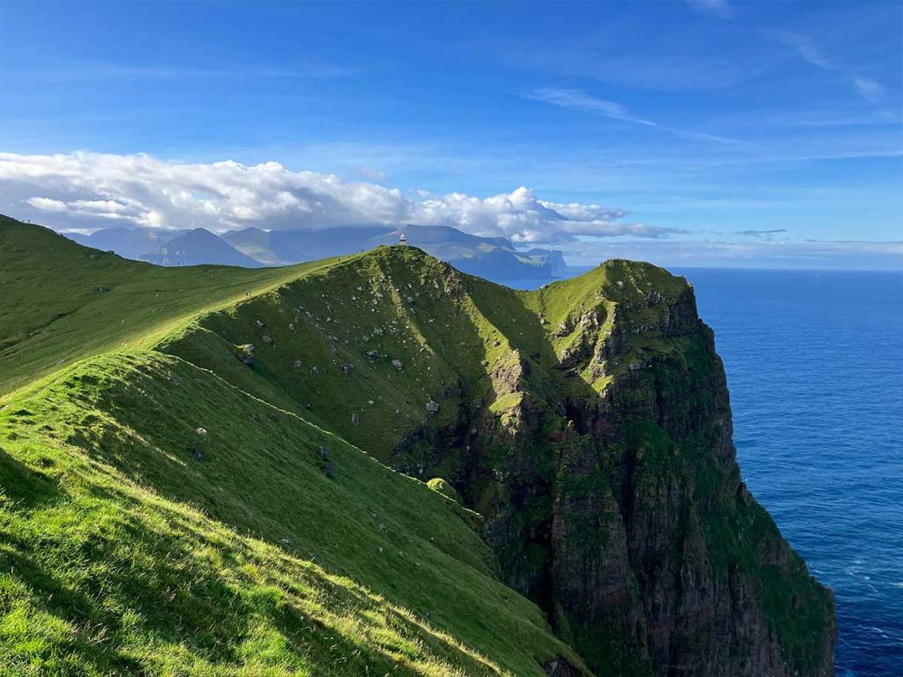
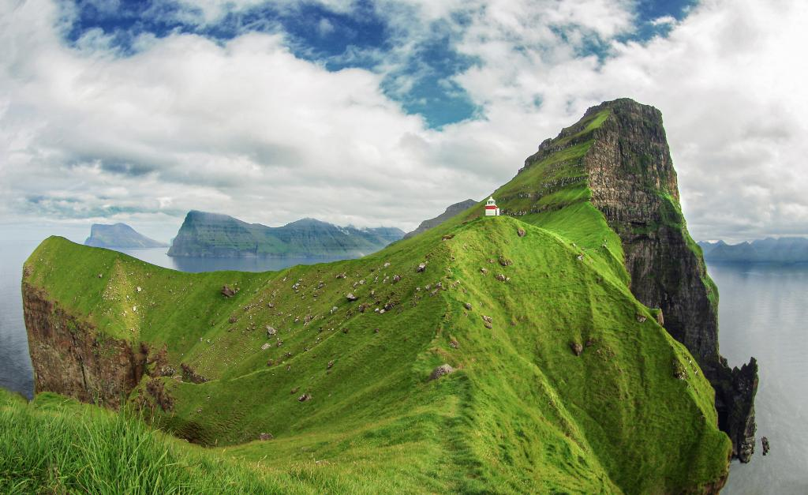
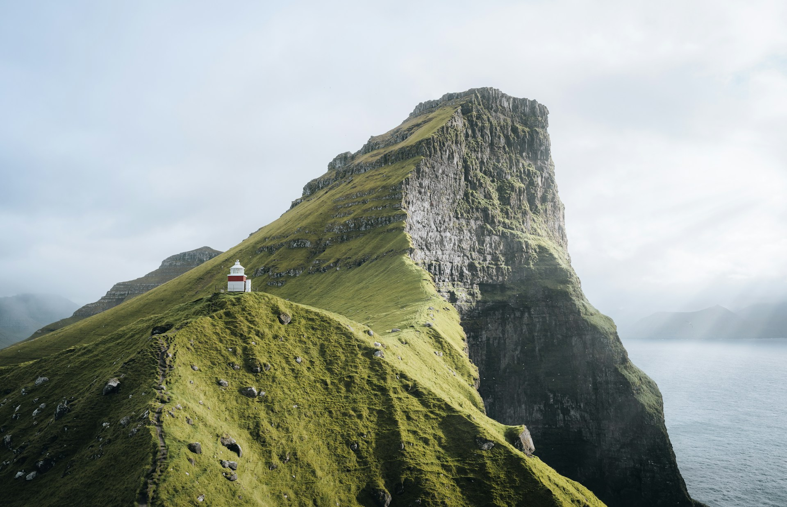
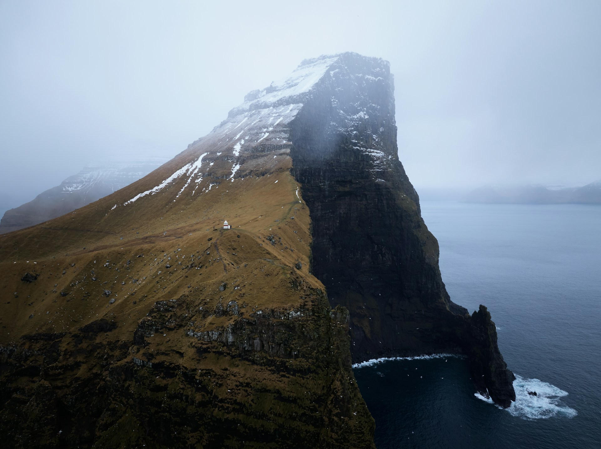

관광명소
-
Kallurin (칼루린)
share content_copy print
세상의 끝에 선 등대
칼소이(Kalsoy) 섬 북쪽 끝에는 소박한 등대 하나가 웅장한 해안 절벽을 마주하고 서 있습니다. 이 풍경은 페로 제도를 대표하는 장면 중 하나로 자리잡았으며, 이곳까지의 트레킹은 페로 제도에서 가장 인기 있는 하이킹 코스 중 하나입니다.
-

location_on 주소
노르드외이야르 Norðoyggjar
-

-
시드라달뤼르(Syðradalur)의 페리 터미널에서 북쪽의 트롤라네스(Trøllanes)까지는 네 개의 터널을 지나는 약 17km의 도로가 연결되어 있습니다. 도로가 좁고 주차 공간이 제한적이므로, 버스를 이용하는 것을 추천합니다. 트롤라네스에서 시작하는 등대까지의 하이킹은 비교적 쉬운 편이며, 왕복 소요 시간은 보통 1시간 반에서 2시간 정도입니다.
-
주소
-
10 Á Trøllanesi, Trøllanes 798, Faroe Islands
798 트롤라네스, 노르드외이야르
-
문의처
-
🌐 visitnorth.fo
📞 +298 456939
📧 info@klaksvik.fo
-
-

-
